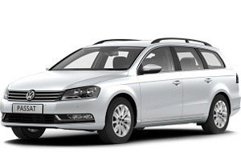
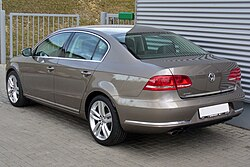

Volkswagen Passat (passat) — семейство среднеразмерных автомобилей компании Volkswagen , производящееся с 1973 по настоящее время. Название Пассат произошло от одноимённого ветра.
Volkswagen Passat B7 — это седьмое поколение Volkswagen Passat, которое было представлено в 2010 году. Он был разработан на платформе PQ46 и предлагал широкий выбор двигателей и трансмиссий.  
| Двигатель | Топливо | Мощность |
|---|---|---|
| 1.4 TSI | Бензин | 122 л.с. |
| 1.8 TSI | Бензин | 160 л.с. |
| 2.0 TDI | Дизель | 140 л.с. |
| 2.0 TDI | Дизель | 170 л.с. |